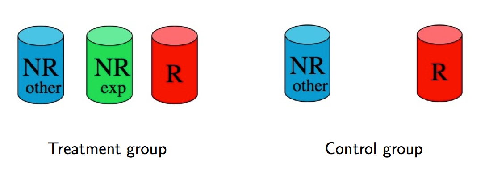
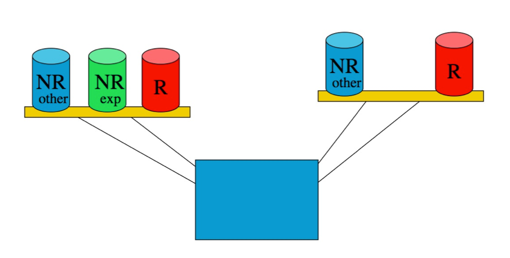
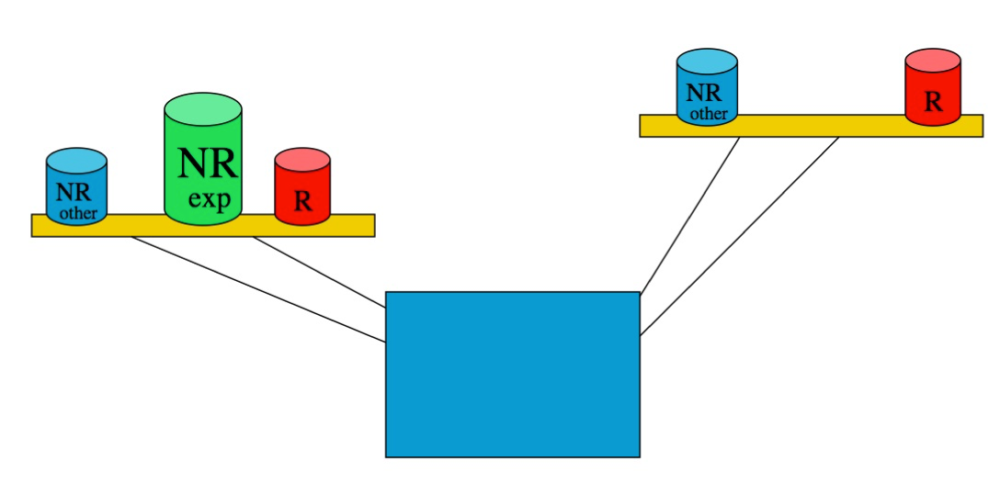

Week 7 lecture notes - PSYC 3435
Sampling
Definitions:
- Population: everybody that the research tries to make conclusions about
- Sample: the subset of the population that actually participates in the research
Goals of sampling:
- maximize representativeness (how closely sample matches population)
- reduce bias (systematic difference between sample and population)
Sampling methods
Type 1: Probability sampling - individuals chosen at random in such a way that we know the probability that any one individual is selected
Examples:
- simple random sample - each individual has an equal chance of being selected
- cluster sample - population divided into groups (clusters). Group(s) selected randomly, then individuals chosen randomly from each cluster
- stratified random sample - sample chosen so that proportion of individuals with a particular characteristic is equivalent in population and sample
- systematic sample - pick a random starting number, then choose every k-th person after that.
Type 2: Convenience sampling - individuals chosen non-randomly
Examples:
- Convenience sampling – use participants who are easy to get (volunteers, etc.)
- Quota sampling - identify specific subgroups, then take from each group until desired number of individuals
Experimental Control
When we do an experiment, we see variability in the DV. How much of this variability is due to our experimental manipulation?
Let's do a little math:
\(T = NR_{exp} + NR_{other} + R\), where
- \(T\) = total variability in DV
- \(NR_{exp}\) = non-random variability due to IV manipulation
- \(NR_{other}\) = non-random extraneous variables that covary with IV (confounds)
- \(R\) = random variability due to measurement error
Our goal is to detect \(NR_{exp}\), so we need to minimize \(NR_{other}\) and \(R\)
Visualization:
Imagine the difference sources of variability as weights:

If \(NR_{other}\) and \(R\) are large relative to \(NR_{exp}\), then detecting the difference may be difficult

But if we reduce the size of \(NR_{other}\) and \(R\) relative to \(R_{exp}\), detecting the difference becomes much easier.
